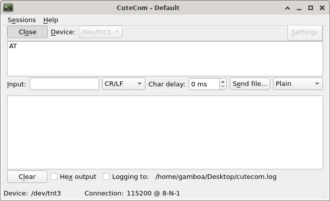

7.1 Serial Terminal
Open the serial terminal (with system application associated with .sterm file extension ), the default application is the Cutecom.

A serial terminal is used to send and receive data over a serial communication channel. The use of this terminal can be replaced by others like the Arduino IDE serial monitor.
To use this tool with PICSimLab you first need to configure a virtual serial port as described in Chapter: Serial Communication. It is possible to use this tool with a real serial port connected to a real device.